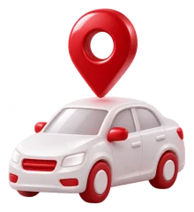
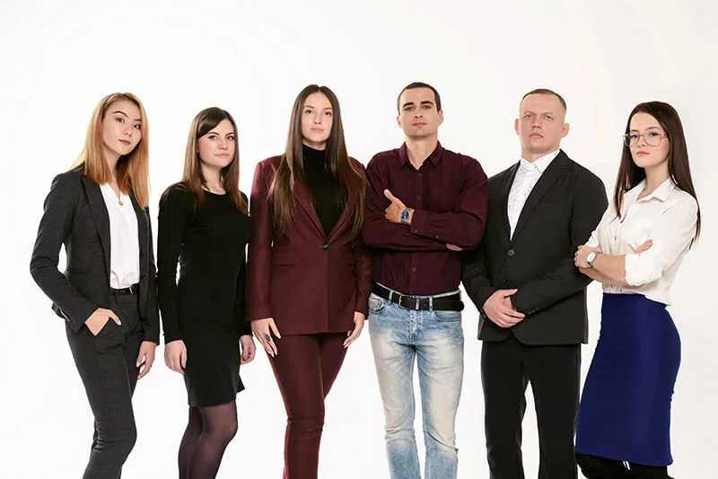
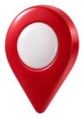

Опыт
Многолетний опыт наших специалистов поможет решить Вашу проблему с положительным результатом для Вас.
Компания «ТЫ ПРАВ» решает юридические вопросы
любой сложности
Лет работаем в Санкт-Петербурге и Ленинградской области
Минут и вы получите ответ на свой вопрос
Выигранных дел в суде с отличным результатом
Лет опыт наших юристов
Оставьте заявку, мы перезвоним Вам в течение 15 минут и проконсультируем Вас по всем интересующим вопросам
Заполните форму — мы перезвоним Вам в течение 15 минут и ответим на все ваши вопросы
Многолетний опыт наших специалистов поможет решить Вашу проблему с положительным результатом для Вас.
Мы выполним для Вас необходимые услуги быстро и качественно. Подготовка необходимых правовых документов (жалобы, претензии, исковые заявления и.т.д.) всего за 1 день.
Более 1200 клиентов остались благодарны нашей компании за оказанные юридические услуги. Мы очень дорожим нашей репутацией и гарантируем Вам высокое качество нашей работы.

Наши Юристы могут подъехать в любое удобное для вас место или вы сами можете приехать в наш офис, находящийся в центре Санкт-Петербурга. Работа наших специалистов рассчитана на комфортабельные для вас условия.
В нашей компании работают юристы, которые специализируются во всех правовых отраслях. Вас проконсультирует и примет на себя юридическую работу тот юрист, который работает именно в этой правовой категории дел.
Все необходимые для Вас юридические документы будут составлены структурированно и грамотно. Мы гарантируем качество нашей работы на самом высшем уровне.
Николай, очень вам благодарен за то, что просто справились с моей на первый взгляд совершенно безвыходной ситуацией! Меня хотели привлечь по ст 172.1 УК РФ, и я было совсем отчаялся, уже не верил в справедливость в этой жизни. А благодаря упорству, интеллекту и адвокатскому профессионализму Николая я избежал уголовной ответственности. Спасибо!
Спасибо вам за все ваши старания. Провели все "от и до" с пониманием к деталям и человечностью. Мое дело было связано с защитой прав потребителей, и компания "ТЫ ПРАВ", начиная с претензионного порядка и заканчивая судом, всю свою работу сделала быстро и качественно. Отдельное спасибо хочу сказать - Виктории, которая на суде с крупной фирмой отсудила мне и мои уплаченные денежные средства, и проценты за просрочку, и проценты за пользование чужими денежными средствами, все расходы, и даже моральный вред. Большое вам человеческое спасибо!
Виктория Алексеевна, спасибо вам за то, что вы помогли в решении трудового спора с моим недобропорядочным работодателем. Если бы не вы, я так бы и остался " с носом", и не увидел своей зарплаты за последние три месяца!
Я очень благодарна компании "ТЫ ПРАВ", которые помогли мне избежать уголовной ответственности по ст. 159 из-за глупой нелепости и недоразумения в моей жизни. В этой компании работают настоящие профессионалы. Спасибо вам огромное за все, что вы делаете.
*Адвокаты осуществляют свою деятельность на основании партнерского соглашения с ООО «ТЫ ПРАВ».
Компания «ТЫ ПРАВ» решает юридические вопросы любой сложности, оказывает профессиональную юридическую помощь в сложных ситуациях. Каждый узкопрофильный юрист имеет основательный практический опыт в Санкт-Петербурге, консультирует по вопросам юриспруденции предпринимателей и физических лиц в процессе личной встречи или по интернету / телефону.
Основная направленность ООО «ТЫ ПРАВ» – предоставление широкого спектра юридических услуг, профессиональная и максимально эффективная защита прав и интересов доверителей.

Любой спор – конфликт и требует справедливого разрешения, оказавшись в сложной жизненной ситуации, человек может не увидеть адекватных решений, а также с похожими трудностями сталкиваются представители бизнеса, компании – юридические лица, особенно, когда приглашение в суд является неожиданным.
Второй момент – специфика работы судебных инстанций. Неточное соблюдение требований к оформлению исковых заявлений, документов, неправильное определение предмета спора, исковых требований, оформление расчета требований и т.д. – причины, по которым дела оставляют без рассмотрения, возвращают и отказывают в удовлетворении требований. Если ваши документы оформлены неверно, то по одной и той же предметности спора вы не сможете подать документы в суд повторно.
Своевременная юридическая поддержка, услуги опытного узкоспециализированного юриста в подобных ситуациях – гарантия спокойного и грамотного разрешения проблем.
Обращаясь в ООО «ТЫ ПРАВ» в Санкт-Петербурге, можно получить консультацию опытного юриста / адвоката (работает по партнерскому соглашению) по вопросам:
Юридическая консультация предоставляется по всем спорам, затрагивающим следующие отрасли:
В числе прочих предоставляются:
Бесплатная юридическая консультация по телефону и при заключении договора. Возможно проведение консультации юриста онлайн для доверителей из регионов России, стран СНГ, Европы и Америки.
Наши юристы и адвокаты, осуществляющие свою деятельность на основании партнерского соглашения в ООО «ТЫ ПРАВ», окажут помощь в разрешении любых гражданских, административных и уголовных дел.
Наши юристы / адвокаты (работают по партнерскому соглашению) решают семейные, наследственные и трудовые споры, конфликты с различными государственными и негосударственными организациями, ведут уголовные дела, занимаются вопросами возмещения ущерба, защиты интеллектуальной собственности, споров с партнерами и банками и т.д. Деятельность компании связана со всеми сферами жизни: медициной и образованием, экономикой и торговлей, строительством, военным делом…
Квалифицированный юрист в Санкт-Петербурге, имеющий специфический опыт работы в отрасли, обозначенной доверителем, быстро решает поставленные задачи. Выбор хорошего специалиста повышает шансы на успешное разрешение сложных ситуаций.
В числе вопросов, которые помогают решать наши специалисты:
Качественная помощь юриста / адвоката (работает по партнерскому соглашению) может быть оказана в срочном порядке! Мы работаем не только в Санкт-Петербурге, но и по всей России. Также к нам обращаются граждане из различных стран СНГ, Европы, Америки (в этом случае осуществляется заключение договора онлайн без личных встреч). Кроме того, возможно представление ваших интересов в суде дистанционно посредством видео конференцсвязи, если он находится не в Санкт-Петербурге.
Свяжитесь с нами для определения наиболее рациональных дальнейших действий. После ознакомления с деталями дела наши специалисты уточнят цены и предложат способы оплаты. Прием заявок через формы на сайте круглосуточный. Вы можете задать свой вопрос и в письменном виде (на эл.почту) или устно по телефону.
Обязательное страхование автогражданской ответственности (ОСАГО) ориентировано на возмещение ущерба, который водитель может нанести другому в случае дорожно-транспортного происшествия. Несмотря на простой механизм действий, процедура имеет немало условий. Оптимальный способ гарантированно получить страховые выплаты при ДТП – обратиться к нашим специалистам.
Читать Возмещение ущерба при ДТПДорожно-транспортные происшествия нередко сопровождаются нанесением и получением ущерба автомобилю. Результатом становится возникновение правовых отношений между участниками, в ходе которых выясняется вопрос компенсаций. Возмещение ущерба при ДТП выполняется по регламентированной процедуре.
Читать Незаконное увольнениеНезаконное увольнение подразумевает отсутствие законных оснований для расторжения трудового договора по инициативе работодателя. Также в данную категорию дел относят и несоблюдение положенной процедуры, включая оформление соответствующих документов.
Читать
Адрес офиса:г. Санкт-Петербург, Английская набережная, д. 60Заполните форму — мы перезвоним Вам в течение 15 минут и ответим на все ваши вопросы
Заполните форму — мы перезвоним Вам в течение 15 минут и ответим на все ваши вопросы
25% скидка при первичном обращении